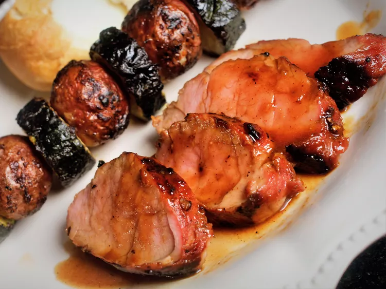

Marinated Grilled Pork Tenderloin Recipe

Description: This marinated pork loin cooks up nicely on the grill.
It tastes best when marinated for 24 hours.
Ingredients
Marinade:
- 1/4 cup honey
- 1/4 cup soy sauce
- 1/4 cup oyster sauce
- 2 tablespoons brown sugar
- 4 teaspoons minced fresh ginger root
- 1 tablespoon ketchup
- 1 tablespoon minced garlic
- 1 tablespoon chopped fresh parsley
- 1/4 teaspoon onion powder
- 1/4 teaspoon cayenne powder
- 1/4 teaspoon ground cinnamon
Pork:
- 2 (12 ounce) pork tenderloins